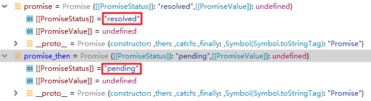
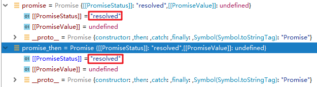

Proise实例的then方法是定义在原型对象Promise.prototype上的，它的作用是为Promise实例添加状态改变时的回调函数。
该方法可以接收两个回调函数作为参数，其中第二个回调函数是可选的。第一个回调函数是 Promise 对象的状态变为 Resolved 时调用，第二个回调函数是 Promise 对象的状态变为 Rejected 时调用。
下面从以下几点进行说明：
then 方法返回的是一个Promise实例，但是需要注意的是并不是原来调用它的那个Promise实例而是一个新的Promise实例。
下面用代码来说明：
let promise = new Promise( function (resolve, reject) {
resolve();
console.log("promise");
});
let promise_then = promise.then(function () {
console.log("promise_then");
});
promise_then.then(function () {
console.log("promise_then_then")
})
// 运行结果：
promise
promise_then
promise_then_then最先打印出 promise 的原因是then方法的回调函数要在所有同步任务执行完后再执行，所以会先执行 console.log("promise") 然后再去执行下面then方法的回调函数。
当程序执行到第6行结束时，promise 和 promise_then 的状态如下图所示：

可见then方法返回的是一个新的promise实例，并且此时promise_then的状态为 pending。
当执行完第8行时，promise 和 promise_then 的状态如下图所示：

可见此时 promise_then 的状态变为 resolved，也就是说只要then方法中的程序正常执行完不报错，返回实例的状态就变为 resolved (这个地方原因不是很清楚，如果有明白的，欢迎留言告知，谢谢哦)。
这个时候再往下执行 promise_then.then 就会打印出 promise_then_then 。
上面的代码等价于
// ES5写法
let promise = new Promise( function (resolve, reject) {
resolve();
console.log("promise");
});
promise.then(function () {
console.log("promise_then");
}).then(function () {
console.log("promise_then_then")
});
// ES6写法
let promise = new Promise( (resolve, reject) => {
resolve();
console.log("promise");
});
promise.then(
() => console.log("promise_then")
).then(
() => console.log("promise_then_then")
);then 方法中前一个回调函数的返回值可以传递给下一个回调函数。
let promise = new Promise( function (resolve, reject) {
resolve();
});
promise.then(function () {
return "aaa";
}).then(function (data) {
console.log(data);
});
// 输出结果
"aaa"当前一个回调函数的返回值是一个promise实例时，下一个then方法的执行情况要根据这个promise实例的状态来执行。
用下面的代码来解释一下：
// 如果形参是'Resolved' -> 状态为‘Resolved’的promise实例
// 如果形参是'Rejected' -> 状态为‘Rejected’的promise实例
function createPromise(status) {
var p = new Promise(function (resolve, reject) {
if (status === "Resolved") {
resolve()
} else {
reject();
}
});
return p;
}
createPromise("Resolved").then(function () {
return createPromise("Rejected"); // 返回的promise实例的状态是“Rejected”
}).then(function () {
console.log("前一个回调函数的返回值promise实例的状态是'Resolved'");
}, function () {
console.log("前一个回调函数的返回值promise实例的状态是'Rejected'");
});
// 输出结果
"前一个回调函数的返回值promise实例的状态是'Rejected'"
createPromise("Resolved").then(function () {
return createPromise("Resolved"); // 返回的promise实例的状态是“Resolved”
}).then(function () {
console.log("前一个回调函数的返回值promise实例的状态是'Resolved'");
}, function () {
console.log("前一个回调函数的返回值promise实例的状态是'Rejected'");
});
// 输出结果：
"前一个回调函数的返回值promise实例的状态是'Resolved'"根据上面代码的输出结果可以清晰地看到后一个回调函数的执行情况是根据前一个回调函数返回的promise的状态来执行的，如果返回的promise实例的状态为 Resolved ，那么就执行第一个函数，如果返回的promise实例的状态为 Rejected ，那么就执行第二个函数。
完，如果不恰当之处，欢迎指正哦 。